The siteمقام
(01–08)
Bare ground, 520 metres from a roadبنجر زمین، سڑک سے 520 میٹر
Tabriz sits at 3,045 metres on a fan of loose rock where a side stream meets the Shimshal River. No fields, no houses. But the Shimshal Valley Road passes 520 metres away and the hamlet of Ziārat is under 2 km downstream. This is not wilderness — it is land nobody has watered yet.
تبریز شمشال دریا کے کنارے 3045 میٹر بلندی پر کھلے پتھروں کے میدان پر واقع ہے، جہاں ایک ذیلی ندی دریا سے ملتی ہے۔ نہ کھیت، نہ گھر۔ لیکن شمشال ویلی روڈ صرف 520 میٹر دور گزرتی ہے اور زیارت گاؤں دو کلومیٹر سے بھی کم فاصلے پر ہے۔ یہ ویرانہ نہیں — یہ وہ زمین ہے جسے ابھی تک کسی نے سیراب نہیں کیا۔
The governing constraintبنیادی رکاوٹ
Across the surrounding 12 × 12 km, 76 % of the ground is steeper than 30° and only 3.2 % is gentler than 5°. Relief runs from 2,749 m on the valley floor to 6,141 m on the ridges. Everything that follows is shaped by this.
آس پاس کے 12 × 12 کلومیٹر علاقے میں 76 فیصد زمین 30 درجے سے زیادہ ڈھلوان ہے اور صرف 3.2 فیصد 5 درجے سے کم۔ بلندی وادی کی تہہ میں 2749 میٹر سے چوٹیوں پر 6141 میٹر تک جاتی ہے۔ آگے کی ہر بات اسی سے طے ہوتی ہے۔
Elevationبلندی
3,045 m
High enough for a single short growing season; low enough that people already farm at this altitude nearby.
اتنی بلندی کہ سال میں ایک مختصر فصل ہو سکے؛ اور اتنی کم کہ قریب ہی لوگ اسی بلندی پر کاشت کرتے ہیں۔
Existing coverموجودہ سبزہ
87 % bare
Only 4.3 hectares show any vegetation in midsummer imagery. Effectively a blank site.
گرمیوں کی تصاویر میں صرف 4.3 ہیکٹر پر سبزہ نظر آتا ہے۔ عملاً ایک خالی جگہ۔
Accessرسائی
520 m
To the road — but 90 m above it on a steep face. A drivable track needs 745 m of switchbacks.
سڑک تک — مگر اس سے 90 میٹر اوپر، ایک کھڑی ڈھلان پر۔ گاڑی کے قابل راستے کے لیے 745 میٹر موڑ درکار ہیں۔
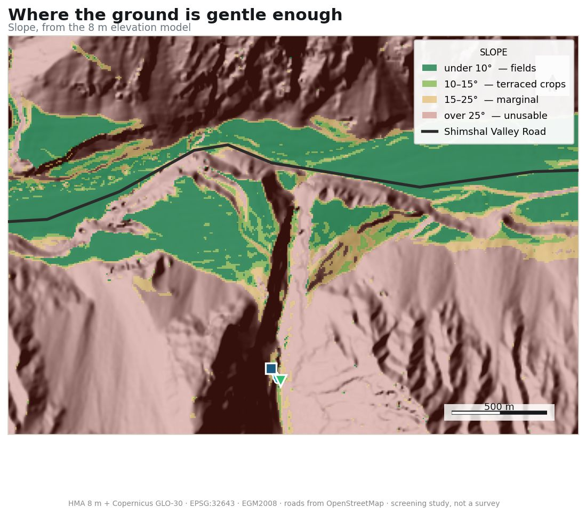
The waterپانی
(02–08)
A bowl of ice reaching 6,325 metresبرف کا پیالہ، 6325 میٹر تک
The stream above Tabriz drains 23.9 km² of mountain. Roughly a third of it lies under glacier ice — twenty small glaciers, the largest running 5.9 km down from a 6,300 m summit and visible from the site itself.
تبریز کے اوپر بہنے والی ندی 23.9 مربع کلومیٹر پہاڑ کا پانی سمیٹتی ہے۔ اس کا تقریباً ایک تہائی حصہ گلیشیئر کی برف کے نیچے ہے — بیس چھوٹے گلیشیئر، جن میں سب سے بڑا 6300 میٹر کی چوٹی سے 5.9 کلومیٹر نیچے آتا ہے اور مقام سے صاف نظر آتا ہے۔
Seasonal shape modelled from the Karakoram glacier-fed regime, anchored on an estimated 0.66 m³/s mean annual. No flow has ever been gauged here.
موسمی تبدیلی قراقرم کے گلیشیائی نظام کے مطابق بنائی گئی ہے، سالانہ اوسط 0.66 مکعب میٹر فی سیکنڈ کے تخمینے پر۔ یہاں بہاؤ کبھی ناپا نہیں گیا۔
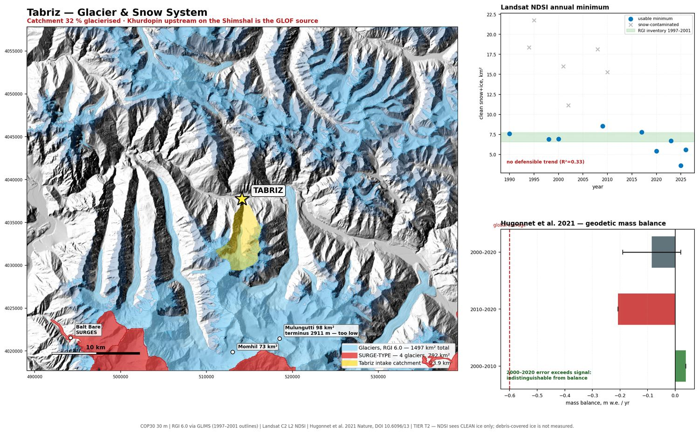
Are the glaciers shrinking?کیا گلیشیئر سکڑ رہے ہیں؟
Mostly no — at least not yet. Published measurements of ice thickness show these glaciers close to balance over 2000–2020, losing mass six to eight times more slowly than the world average. The Karakoram is genuinely unusual. But the last decade shows the start of a decline, so it should not be assumed to hold forever.
زیادہ تر نہیں — کم از کم ابھی تک نہیں۔ برف کی موٹائی کی شائع شدہ پیمائشیں بتاتی ہیں کہ 2000 سے 2020 تک یہ گلیشیئر تقریباً توازن میں رہے، اور عالمی اوسط سے چھ سے آٹھ گنا آہستہ سکڑے۔ قراقرم اس معاملے میں واقعی غیر معمولی ہے۔ مگر پچھلی دہائی میں کمی کا آغاز نظر آتا ہے، اس لیے یہ فرض نہیں کرنا چاہیے کہ یہ ہمیشہ رہے گا۔
| Period | m w.e./yr | Reading |
|---|---|---|
| 2000–2010 | +0.038 | near balance, slight gain |
| 2010–2020 | −0.207 | loss |
| 2000–2020 | −0.085 ± 0.105 | error exceeds signal |
| Global average | −0.5 to −0.7 | for scale |
Method discarded
A Landsat snow-extent series across 73 scenes produced an apparent −47 %/decade trend. It was an artefact of snowfall timing. Withdrawn. Glacier area from snapshots is the wrong measurement; elevation change is the right one.
The canalنہر
(03–08)
Ninety-three metresتیرانوے میٹر
This is the part that turned out easy. A canal 93 metres long, falling three centimetres in every ten metres, carries water from the stream to a holding tank at 3,103 m. From there it reaches the whole fan by gravity. No pumps, no tunnels, no rock blasting.
یہی حصہ سب سے آسان نکلا۔ 93 میٹر لمبی نہر، جو ہر دس میٹر پر تین سنٹی میٹر نیچے آتی ہے، ندی سے پانی لے کر 3103 میٹر پر ایک ذخیرے تک پہنچاتی ہے۔ وہاں سے ثقل کے زور پر پورا میدان سیراب ہو سکتا ہے۔ نہ پمپ، نہ سرنگ، نہ چٹان توڑنے کی ضرورت۔
Result worth notingقابلِ ذکر نتیجہ
Routes optimised separately for shortest, safest and lowest construction difficulty all converge on the same 89–93 m alignment. The terrain is so constrained there is no trade-off to make.
جو راستے الگ الگ مختصر ترین، محفوظ ترین اور کم ترین تعمیراتی دشواری کے لیے نکالے گئے، وہ سب ایک ہی 89 تا 93 میٹر لائن پر آ ملے۔ زمین اتنی تنگ ہے کہ کوئی متبادل ہے ہی نہیں۔
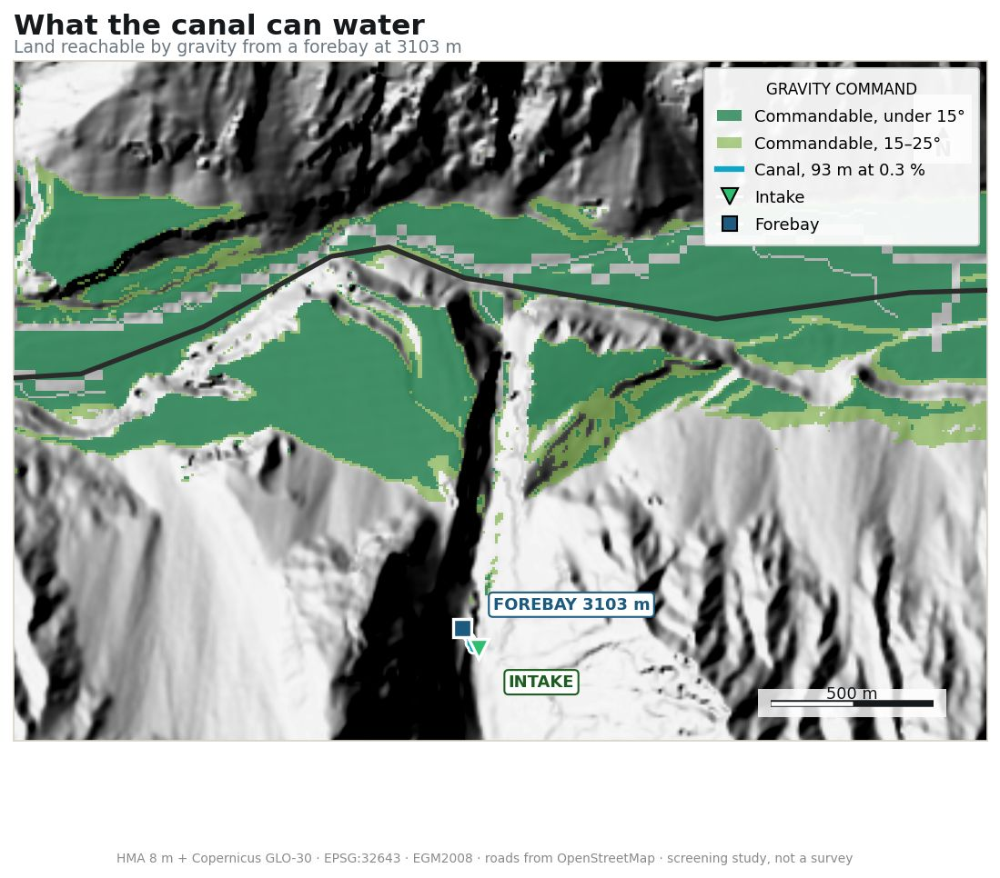
Route D — the alternative worth arguing about
Taking the intake 271 m higher gives 476 m of head instead of 207 — 2.3× the power for the same flow. The price is a different order of civil work.
| Route | Intake | Length | Mean cut/fill | Max fill | Rock | Head |
|---|---|---|---|---|---|---|
| A / B / C identical | 3103 m | 93 m | 1.98 m | 4.3 m | 0 m | 207 m |
| D combined | 3374 m | 542 m | 13.93 m | 44.2 m | 136 m | 476 m |
A 44 m embankment may kill Route D on its own, and it crosses 480 m of high-hazard ground. It cannot be judged from an elevation model.
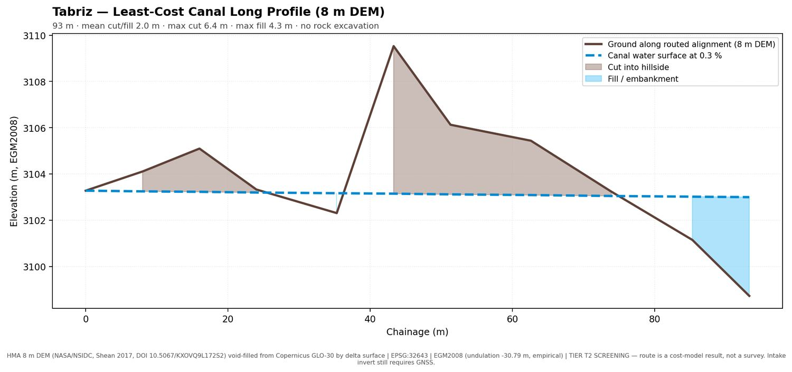
The landزمین
(04–08)
435 hectares in, 48 out435 ہیکٹر میں سے 48
Here is the honest arithmetic. Gravity can reach 435 hectares. Most is too steep to farm. Of what remains, much sits low enough that a glacial flood would reach it, and much of the rest lies in the runout path of avalanches, rockfall or debris flows.
یہ رہا کھرا حساب۔ ثقل 435 ہیکٹر تک پانی پہنچا سکتی ہے۔ زیادہ تر زمین کاشت کے لیے بہت ڈھلوان ہے۔ جو بچتی ہے، اس کا بڑا حصہ اتنا نیچے ہے کہ گلیشیائی سیلاب وہاں پہنچ جائے گا، اور باقی برفانی تودوں، پتھروں اور ملبے کے راستے میں آتی ہے۔
Reachable by gravityجہاں ثقل پانی پہنچا سکے
434.7 ha
…gentle enough to work (under 25°)…جو کافی ہموار ہو (25 درجے سے کم)
207.4 ha
…genuinely good land (under 15°)…واقعی اچھی زمین (15 درجے سے کم)
170.0 ha
…above the glacial-flood stage…گلیشیائی سیلاب کی سطح سے اوپر
82.9 ha
…clear of avalanche, rockfall, debris flow…برفانی تودے، پتھر اور ملبے سے محفوظ
48.2 ha
That 48 hectares is spread along four kilometres of valley. About 30 of it lies at Tabriz itself, in two blocks — the larger one 21.3 ha. The rest are separate benches further downstream, reachable in principle but a different scheme. A sketch drawn by eye before any of this guessed 35 ha. یہ 48 ہیکٹر چار کلومیٹر لمبی وادی میں پھیلے ہوئے ہیں۔ ان میں سے تقریباً 30 ہیکٹر خود تبریز میں ہیں، دو ٹکڑوں میں — بڑا ٹکڑا 21.3 ہیکٹر۔ باقی نیچے کی طرف الگ چبوترے ہیں، جہاں اصولاً پانی پہنچ سکتا ہے مگر وہ الگ منصوبہ ہوگا۔ تجزیے سے پہلے اندازے سے بنایا گیا خاکہ 35 ہیکٹر تھا۔
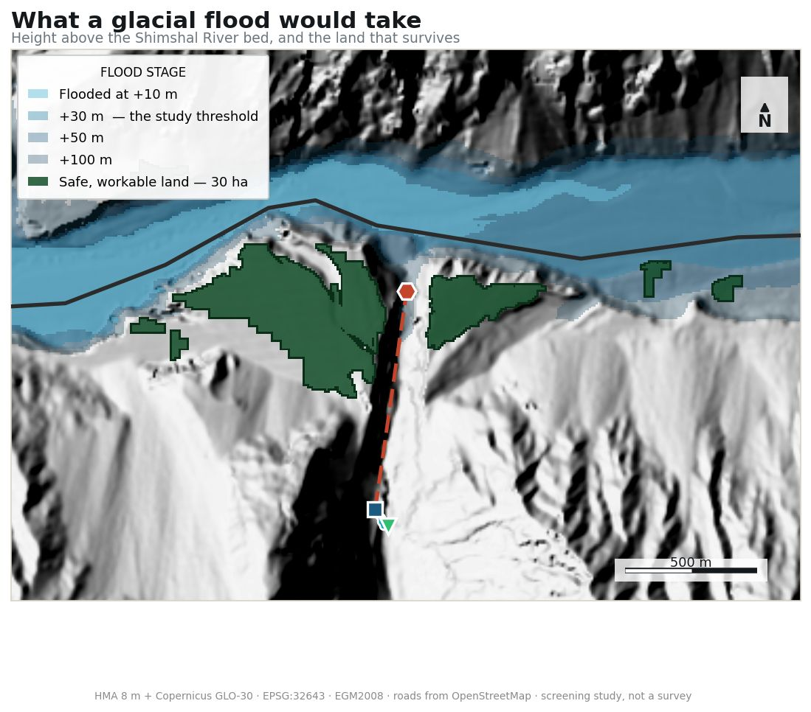
Agricultural suitability
Classified by the FAO (1976) maximum-limitation rule — a parcel is graded by its worst criterion, not a weighted average. Chosen deliberately: it requires no invented weights.
| Class | Area | Note |
|---|---|---|
| S1 highly suitable | 0.0 ha | stoniness caps every parcel until soil is surveyed |
| S2 moderately suitable | 42.5 ha | converges with the 48.2 ha hazard result |
| S3 marginal | 29.4 ha | |
| N not suitable | 1540.9 ha |
The dominant limiting factor is not slope or soil — it is winter sun. 82.6 ha of otherwise workable land is limited by terrain shading; mid-December sunlit hours range from 0.0 to 9.2 per day.
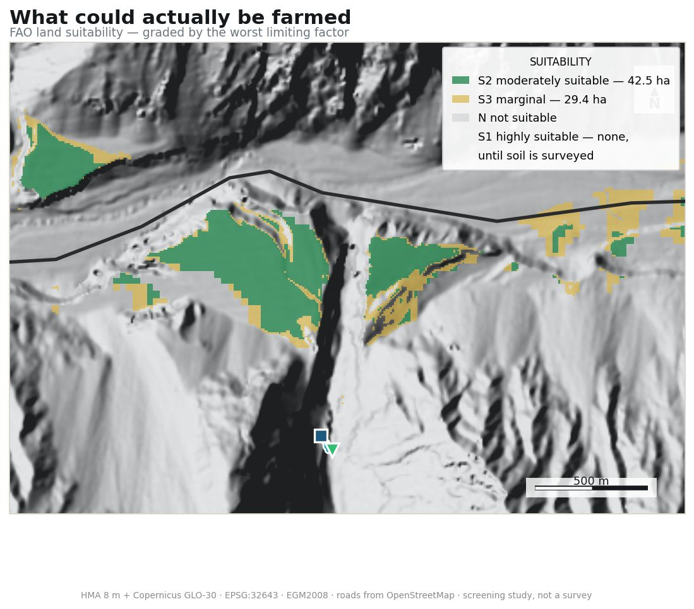
The hazardخطرات
(05–08)
1905. 1964. 2017.1905۔ 1964۔ 2017۔
Tabriz sits downstream of the Khurdopin Glacier, which surges roughly every twenty years, dams the Shimshal River, and then releases the lake it has made. It has done so three times on record. The 2017 flood damaged the Shimshal road and bridges.
تبریز خردوپین گلیشیئر کے نیچے واقع ہے، جو تقریباً ہر بیس سال بعد اچانک آگے بڑھتا ہے، شمشال دریا کو بند کر دیتا ہے، اور پھر بننے والی جھیل کو یکدم چھوڑ دیتا ہے۔ ریکارڈ کے مطابق ایسا تین بار ہو چکا ہے۔ 2017 کے سیلاب نے شمشال روڈ اور پل تباہ کیے تھے۔
Good newsاچھی خبر
Sentinel-2 mapping across five cloud-free seasons found no persistent glacial lake in the Tabriz catchment itself. Direct outburst risk to the intake is low.
پانچ صاف موسموں کی سیٹلائٹ تصاویر میں تبریز کے اپنے آبگیر میں کوئی مستقل گلیشیائی جھیل نہیں ملی۔ انٹیک کو براہِ راست سیلاب کا خطرہ کم ہے۔
The +30 m figure used throughout this study is a judgement, not a computed design flood — and it drives the single largest cut in the land funnel.
اس مطالعے میں استعمال ہونے والا 30 میٹر کا اندازہ ایک فیصلہ ہے، کوئی حساب کیا ہوا ڈیزائن سیلاب نہیں — اور زمین کے حساب میں سب سے بڑی کمی اسی سے آتی ہے۔
| Powerhouse option | Head | Above river | Verdict |
|---|---|---|---|
| 337 m penstock | 96 m | +172 m | safe |
| 967 m penstock | 207 m | +62 m | selected |
| 1712–2276 m penstock | 282–292 m | ~0 m | in the channel — rejected |
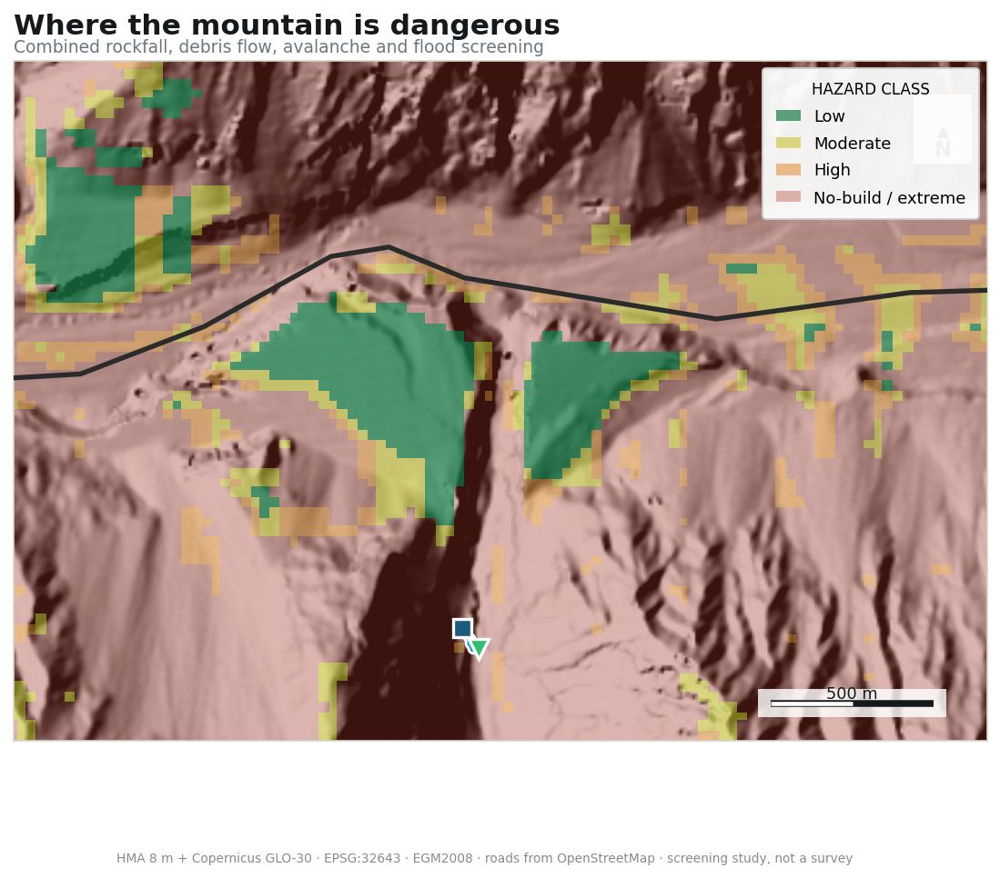
Not assessed
Seismic hazard. The USGS catalogue records 590 events M≥4.0 within 200 km since 1900, the largest M6.3 at 132 km — but a catalogue is not a hazard assessment. A design ground motion requires a PSHA, and seismically-triggered landslide susceptibility is untouched.
The villageبستی
(06–08)
About forty householdsتقریباً چالیس گھرانے
Thirty hectares of watered, buildable land supports something like 150 to 300 people. A small village, and a viable one. Fields and orchards take the best ground; houses go on the poorer margins, which is how villages are laid out throughout Hunza.
تیس ہیکٹر سیراب اور قابلِ تعمیر زمین تقریباً 150 سے 300 افراد کو سہارا دے سکتی ہے۔ ایک چھوٹا مگر قابلِ عمل گاؤں۔ بہترین زمین کھیتوں اور باغات کے لیے، اور گھر کم زرخیز کناروں پر — پورے ہنزہ میں گاؤں اسی طرح بستے ہیں۔
Irrigated fields — 24 haسیراب کھیت — 24 ہیکٹر+
Annual crops on the gentlest watered ground, under 10° slope. The largest single block is 21.3 ha.سب سے ہموار سیراب زمین پر سالانہ فصلیں، 10 درجے سے کم ڈھلان۔ سب سے بڑا ٹکڑا 21.3 ہیکٹر ہے۔
Orchards and tree crops — 11 haباغات اور درخت — 11 ہیکٹر+
Terraceable slopes with at least 2.5 hours of mid-December sun — the frost constraint that shapes where trees can survive.وہ ڈھلانیں جہاں دسمبر میں کم از کم ڈھائی گھنٹے دھوپ پڑتی ہو — یہی پالے کی رکاوٹ طے کرتی ہے کہ درخت کہاں جی سکتے ہیں۔
Housing — 2 ha, about 40 plotsرہائش — 2 ہیکٹر، تقریباً 40 پلاٹ+
300 m² per plot plus 60 % for lanes and yards, placed on agriculturally poorer ground so the best land stays in cultivation.فی پلاٹ 300 مربع میٹر، اور گلیوں اور صحن کے لیے مزید 60 فیصد؛ کم زرخیز زمین پر رکھے گئے تاکہ بہترین زمین کاشت میں رہے۔
Public core — 0.4 haعوامی مرکز — 0.4 ہیکٹر+
School, clinic and community space, sized from population and placed adjacent to housing on the gentlest available ground.اسکول، کلینک اور اجتماعی جگہ، آبادی کے حساب سے، رہائش کے ساتھ سب سے ہموار زمین پر۔
Grazing — 11 haچراگاہ — 11 ہیکٹر+
Rough pasture within walking distance, on buildable ground not needed for crops.پیدل فاصلے پر کھردری چراگاہ، اُس زمین پر جو فصل کے لیے درکار نہیں۔
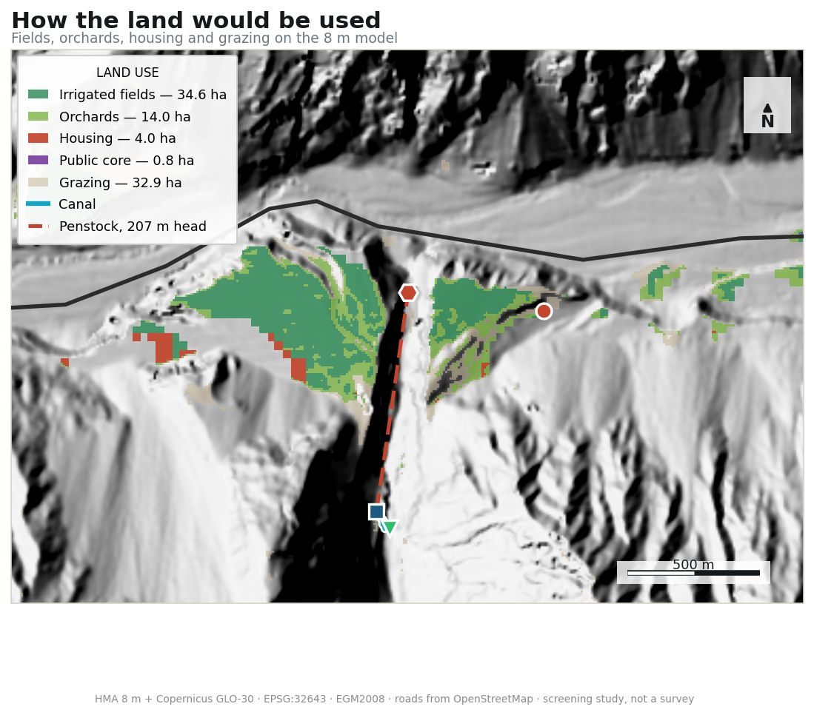
| Demand, 40 households | kW | Supply (η = 0.60) | kW |
|---|---|---|---|
| 200 W/hh — lighting, charging | 8.0 | Winter min, 40 l/s | 48.8 |
| 400 W/hh — + appliances | 16.0 | Shoulder, 100 l/s | 122.0 |
| 800 W/hh — + cooking, heating | 32.0 | Summer, 400 l/s | 487.8 |
At forty households the winter minimum covers even the heating case, with margin. That conclusion rests entirely on a winter flow that has never been gauged.
Two failures found
Water pressure. The tank site gives 15.2 bar static to the mean dwelling; fittings want 2–4 bar. Needs break-pressure tanks — or a compact layout, which removes the problem at source.
Wastewater. No compliant site exists below the settlement that is also more than 100 m from a watercourse, off cultivated ground and above the flood stage.
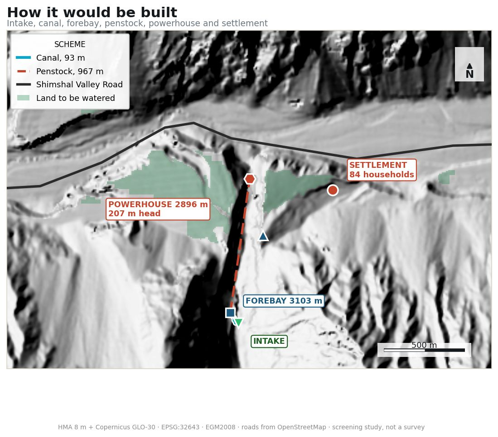
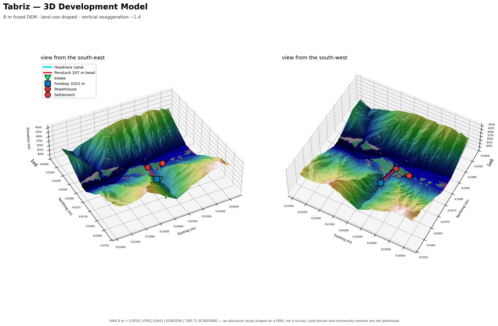
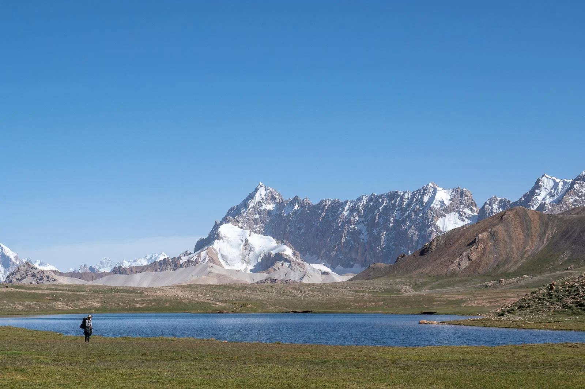
Water has been moved here beforeیہاں پہلے بھی پانی موڑا گیا ہے
Shimshal village sits at about the same altitude, a few hours down the valley. Its fields are fed by channels cut along the hillside, some of them generations old. This study tests the same idea on new ground.
شمشال گاؤں تقریباً اسی بلندی پر ہے، وادی میں چند گھنٹے کے فاصلے پر۔ وہاں کے کھیت پہاڑ کے ساتھ کاٹی گئی نہروں سے سیراب ہوتے ہیں، جن میں سے کچھ نسلوں پرانی ہیں۔ یہ مطالعہ وہی ترکیب نئی زمین پر آزماتا ہے۔
Unknownsنامعلوم
(07–08)
What a satellite cannot tell youجو سیارہ نہیں بتا سکتا
Every number on this site comes from orbit. Some things cannot be improved that way, and one in particular blocks everything downstream.
اس صفحے کا ہر عدد خلا سے آیا ہے۔ کچھ چیزیں اس طرح معلوم نہیں کی جا سکتیں، اور ایک خاص چیز باقی سب کو روک دیتی ہے۔
Blockingفیصلہ کن رکاوٹ
The intake level is unknownانٹیک کی بلندی معلوم نہیں
It sits inside a 0.53 ha void in the elevation model — a narrow shadowed gully where stereo matching fails. Google Earth reads 3156 m there; two independent models agree on ~3095 m. Every head figure scales off this number. Requires GNSS.
یہ بلندی کے ماڈل میں 0.53 ہیکٹر کے خلا میں ہے — ایک تنگ، سایہ دار نالہ جہاں پیمائش ناکام ہو جاتی ہے۔ گوگل ارتھ وہاں 3156 میٹر بتاتا ہے؛ دو آزاد ماڈل 3095 میٹر پر متفق ہیں۔ ہیڈ کا ہر عدد اسی پر منحصر ہے۔ جی این ایس ایس ضروری ہے۔
Blockingفیصلہ کن رکاوٹ
Flow has never been measuredبہاؤ کبھی ناپا نہیں گیا
All discharge figures are transferred from a neighbouring basin. Winter minimum is both the binding constraint and the hardest thing to estimate remotely. A full annual gauging record is needed.
بہاؤ کے تمام اعداد ایک پڑوسی طاس سے لیے گئے ہیں۔ سردیوں کا کم سے کم بہاؤ ہی اصل رکاوٹ ہے اور دور سے اندازہ لگانا سب سے مشکل۔ پورے سال کا ریکارڈ درکار ہے۔
Shapes the designڈیزائن پر اثر
The flood stage is a judgementسیلاب کی سطح ایک اندازہ ہے
The +30 m threshold drives the single largest cut in the land funnel — 170 ha down to 83 ha. Replacing it needs lake volume, a breach hydrograph and hydraulic routing.
30 میٹر کی حد زمین کے حساب میں سب سے بڑی کمی لاتی ہے — 170 ہیکٹر سے 83 ہیکٹر۔ اسے بدلنے کے لیے جھیل کا حجم اور سیلاب کا باقاعدہ ماڈل چاہیے۔
Shapes the designڈیزائن پر اثر
Nothing has been walkedکچھ بھی زمین پر نہیں دیکھا گیا
The canal route crosses 40 m of void-filled ground and 88 m classed high-hazard. Slope stability, rock quality and seepage are unassessed.
نہر کا راستہ 40 میٹر ایسی زمین سے گزرتا ہے جس کا ڈیٹا خلا سے بھرا گیا، اور 88 میٹر بلند خطرے والی زمین سے۔ ڈھلان کی مضبوطی اور رساؤ کا جائزہ نہیں لیا گیا۔
May be decisiveشاید سب سے اہم
Land and water rightsزمین اور پانی کے حقوق
Not a GIS question, and potentially the real constraint. Shimshal has strong customary governance of pasture and water. Who holds rights to this stream is unanswered here.
یہ نقشہ سازی کا سوال نہیں، اور شاید اصل رکاوٹ یہی ہو۔ شمشال میں چراگاہ اور پانی پر مضبوط روایتی نظام ہے۔ اس ندی پر کس کا حق ہے، یہ یہاں طے نہیں ہوا۔
Untouchedبالکل نہیں دیکھا گیا
Seismic designزلزلے کا ڈیزائن
Northern Pakistan is seismically active. No hazard analysis was obtained and no design ground motion exists for this site.
شمالی پاکستان زلزلوں کے لحاظ سے متحرک علاقہ ہے۔ اس مقام کے لیے کوئی باقاعدہ تجزیہ حاصل نہیں کیا گیا۔
Methodطریقہ کار
(08–08)
Everything is loggedہر چیز درج ہے
Every dataset carries a row recording source, resolution, date, vertical datum, licence, and whether it is measured, modelled or assumed. Every analysis carries a log entry with exact parameters and a verification check.
ہر ڈیٹاسیٹ کے ساتھ اس کا ماخذ، ریزولوشن، تاریخ، عمودی بنیاد، لائسنس، اور یہ درج ہے کہ وہ ناپا گیا ہے، ماڈل سے نکلا ہے یا فرض کیا گیا ہے۔ ہر تجزیے کا اندراج اس کے تمام پیمانوں اور جانچ کے ساتھ موجود ہے۔
Technical tables and sources remain in English
| Tier | Data | Valid for | Not valid for |
|---|---|---|---|
| T1 | 30 m DEM, global rasters | Route screening, catchment area, hectares ±20 % | Any gradient, head or volume design |
| T2 | 8 m DEM, Sentinel-2 10 m | Corridor narrowing, hazard mapping | Final invert levels, penstock design |
| T3 | RTK GNSS, drone, gauged flow, boreholes | Construction design | — |
Corrections made during the studyمطالعے کے دوران کی گئی تصحیحات
Each of these was found and fixed during the work. They are listed so the same mistakes are not repeated.یہ سب کام کے دوران پکڑی اور درست کی گئیں۔ یہاں اس لیے درج ہیں کہ وہی غلطیاں دوبارہ نہ ہوں۔
- Unconstrained hazard cone returned 100 % exposure. Replaced with flow-path constrained runout.
- Canal routed to the wrong target level, needing 35 m of embankment.
- Forebay optimiser under-constrained — returned a 735 m head.
- Deep powerhouse options over-promised before GLOF screening rejected them.
- "No glaciers in the catchment" — a test compared Web Mercator metres against degrees.
- Catchment truncated by the analysis grid — real area 23.90 km², not 15.43.
- Glacier trend from snow extent — an artefact of snowfall timing.
- Settlement pushed 650 m above its own fields by an over-strict rule.
Sources
Copernicus DEM GLO-30 · ESA/Airbus · 30 m · EGM2008
HMA 8 m DEM Mosaic · Shean, D. 2017 · NASA NSIDC DAAC · doi:10.5067/KXOVQ9L172S2
Randolph Glacier Inventory 6.0 & 7.0 · RGI Consortium / GLIMS
Hugonnet, R. et al. 2021 · Nature 592:726–731 · doi:10.6096/13
Landsat Collection 2 · USGS via Microsoft Planetary Computer
Sentinel-2 L2A · ESA · ESA WorldCover 2021 · SoilGrids v2.0 · ISRIC
OpenStreetMap contributors, ODbL · USGS FDSN catalogue
Termsاصطلاحات
- Gravity command
- The land a canal can water without pumping.وہ زمین جسے نہر بغیر پمپ کے سیراب کر سکے۔
- Head
- The vertical drop water falls through to a turbine. More head means more power from the same flow.وہ عمودی بلندی جہاں سے پانی ٹربائن پر گرتا ہے۔ زیادہ ہیڈ کا مطلب اُتنے ہی پانی سے زیادہ بجلی۔
- Forebay
- A small tank where the canal ends, holding water steady before the pipe down to the turbine.نہر کے آخر میں ایک چھوٹا ذخیرہ، جو ٹربائن تک جانے والے پائپ سے پہلے پانی کو ہموار رکھتا ہے۔
- GLOF
- Glacial lake outburst flood — a glacier dams a river, a lake builds behind it, and the dam fails.گلیشیائی جھیل کا سیلاب — گلیشیئر دریا کو بند کرتا ہے، پیچھے جھیل بنتی ہے، اور پھر بند ٹوٹ جاتا ہے۔
- Surge-type glacier
- A glacier that periodically advances far faster than normal, sometimes kilometres in months.وہ گلیشیئر جو وقفے وقفے سے معمول سے کہیں تیز آگے بڑھتا ہے، کبھی مہینوں میں کئی کلومیٹر۔
- Mass balance
- Whether a glacier is gaining or losing ice, in metres of water equivalent per year.گلیشیئر برف کھو رہا ہے یا بڑھا رہا ہے، سالانہ میٹر پانی کے برابر میں۔